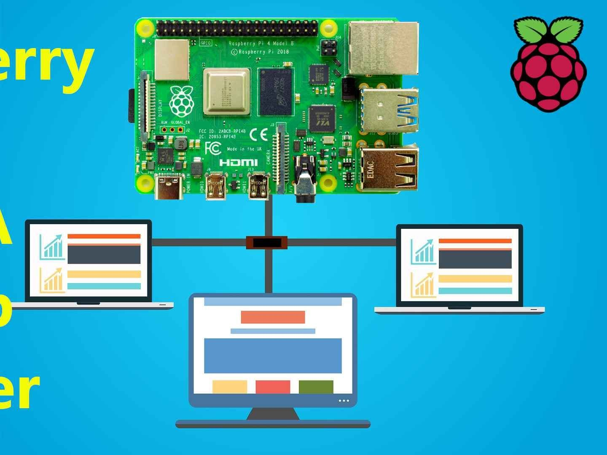

En sida om Göran Olson
Yrkesliv
 Med lång erfarenhet av programmering och systemutveckling har jag arbetat med vitt skilda tekniker. Bland annat har jag fått möjligheten att arbeta med SAML2-standarden för autentisering, OCR-teknik för inläsning av text från bilder samt med domänspecifik programmering med Jetbrains MPS. Jag har även utvecklat en e-handelsplatform från grunden. Många spännande saker som synes. Just nu går jag en utbildning om frontend med React.
Med lång erfarenhet av programmering och systemutveckling har jag arbetat med vitt skilda tekniker. Bland annat har jag fått möjligheten att arbeta med SAML2-standarden för autentisering, OCR-teknik för inläsning av text från bilder samt med domänspecifik programmering med Jetbrains MPS. Jag har även utvecklat en e-handelsplatform från grunden. Många spännande saker som synes. Just nu går jag en utbildning om frontend med React.
Fritid
Alistair MacLeans bästa böcker
- Kanonerna på Navarone
- Hemliga vägar
- Station Zebra
- Åtta glas
- H. M. S. Ulysses

It-projekt
 Som en riktig datornörd håller jag naturligtvis även på med en Raspberry Pi. Den använder jag som en privat filserver. Eftersom jag har flera datorer blir det praktiskt lagra data där för att kunna komma åt det från mina andra datorer. Dessutom får jag alltid lagring av data på minst 2 datorer.